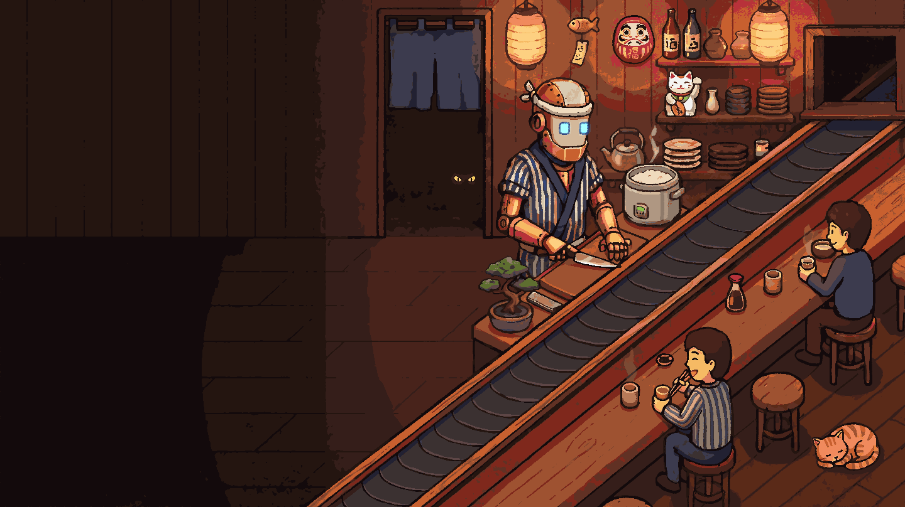
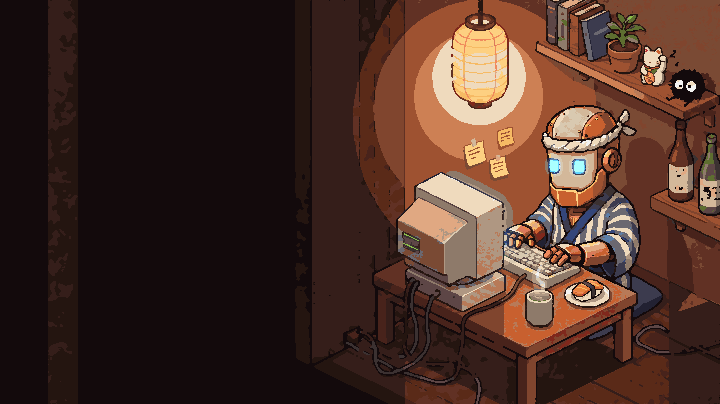
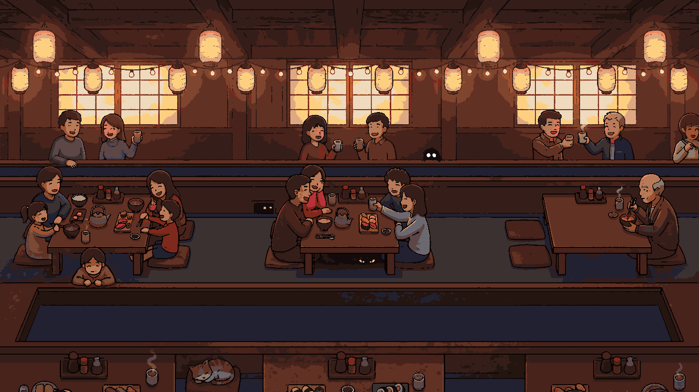
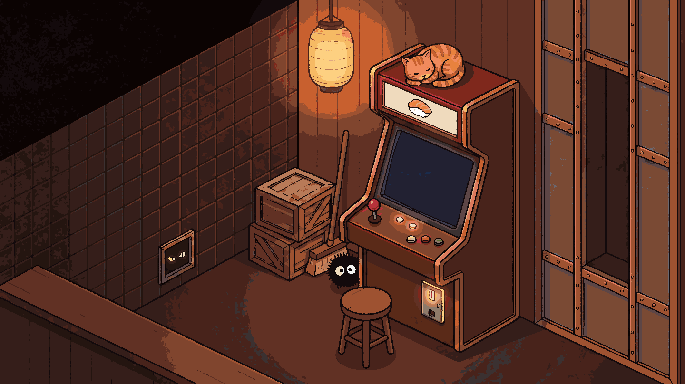
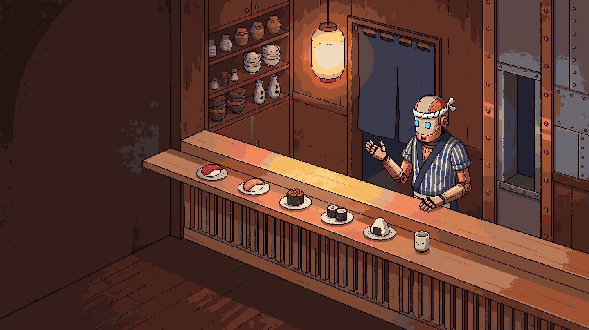
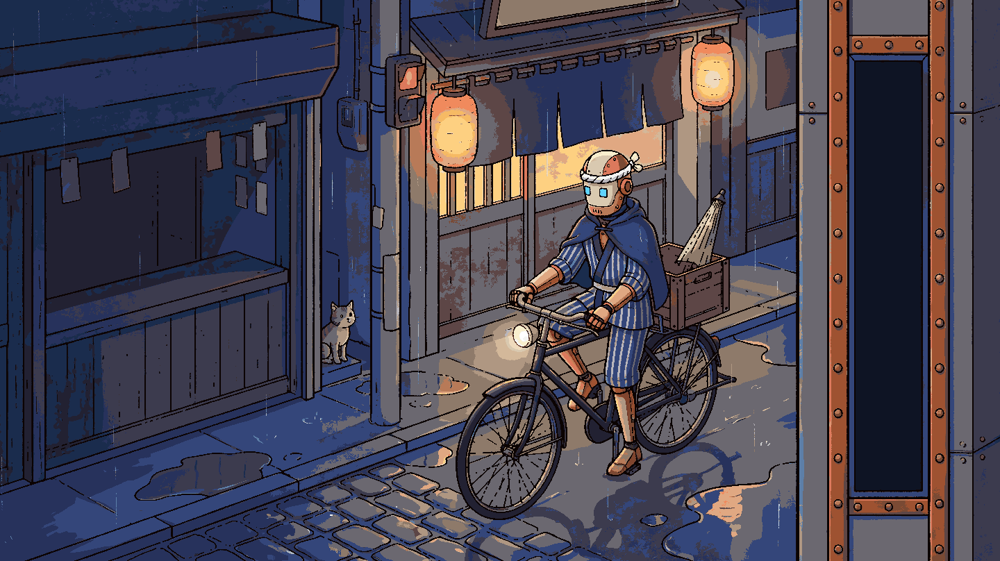
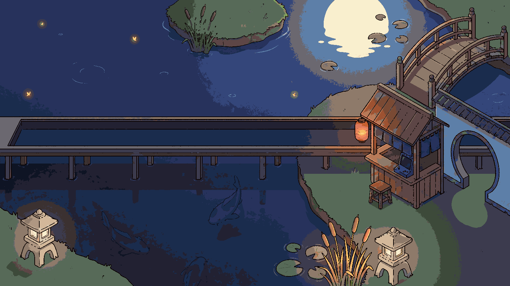

Jiro, your AI staff engineer
Bring your own subscription. Cloud coding agents from Nori. Ask in Slack, the CLI or a trigger, and get a pull request back.

From a Slack message to a pull request
Ask Jiro in Slack; Jiro opens a pull request and an environment you can try. (On the animated site this is a scripted, clickable example, not a measured Nori result.)

Same prompt. Different chef.
“Add rate limiting to the login endpoint.” An illustrative replay: a generic agent adds four dependencies and fails CI; Jiro asks one question, changes one file, adds a test, and opens a PR.

How Jiro compares
| Nori | Claude Tag | Devin | Cursor Cloud | |
|---|---|---|---|---|
| Agent | Claude Code, Codex CLI, Gemini CLI, pi, Cursor Agent, Goose, GitHub Copilot, Antigravity, Snowflake Cortex, or your own agent | Claude only | Devin only | Cursor only |
| Model | any model, your keys | Anthropic only | routed for you | Cursor's catalogue |
| Context | org-wide, portable | Claude memories | API export | proprietary rules |
| Cloud | AWS · Azure · GCP, your VPC | Anthropic only | hosted (VPC on contract) | hosted only |
| Pricing | flat (zero token markup) | API tokens, high volume | credits (token markup) | metered, per model |
From noriagentic.com.

Frequently Asked Questions
- Which coding agents can I run?
- Claude Code, Codex, and Cursor. Any agent that speaks the Agent Client Protocol can be registered alongside them. Every agent runs on the same environment primitives, so you can mix agents across tasks or run several inside one workspace.
- Can it work with our non-engineering tools?
- Yes. Salesforce, HubSpot, Google Sheets, Google Drive, Notion, Linear, Jira, Stripe, and Gmail, plus hundreds more. One agent across the stack, scoped per person, rather than a pile of logins. Ops, finance, and data teams describe the work in Slack or Teams the way they would ask a teammate. No CLI and no new dashboard.
- What does an agent's environment look like?
- Each agent works in an isolated cloud environment with your repository, tools, dependencies, and services ready to use.
- How does billing work?
- Plans are sized by runtimes. The free trial runs five for 30 days, Developer gives one user up to three persistent runtimes, and Team gives multiple users five shared ones. Enterprise sets capacity to fit. Runtimes sleep when idle and wake on demand.
- Is the output always a pull request?
- No. Agents can return a pull request, commit, comment, or completed task for you to review, merge, or send back. An output can also be a file when that is what the work produces: a document, a spreadsheet, a presentation, or another office artifact.
- What repositories can I use?
- Any GitHub repository you have access to. Connect your GitHub account and select which repos to enable.

Pay per agent, no hidden fees.
Free trial
$0 for 30 days
Five runtimes and the complete team experience
$0 for 30 days
Five runtimes and the complete team experience
Developer
$99 /month
One user, up to three persistent runtimes, integrations, triggers, and BYOK
$99 /month
One user, up to three persistent runtimes, integrations, triggers, and BYOK
Team
$250 /month
Multiple users, five shared runtimes, organization controls, integrations, and collaboration
$250 /month
Multiple users, five shared runtimes, organization controls, integrations, and collaboration
Enterprise
Contact us
Custom capacity, role-based access control, audit trails, deployment, onboarding, and support
Contact us
Custom capacity, role-based access control, audit trails, deployment, onboarding, and support
No card required for the trial. Runtimes sleep when idle and wake on demand.
